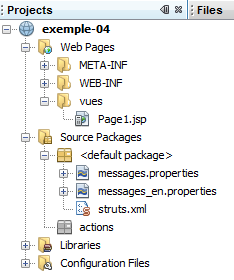
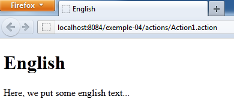
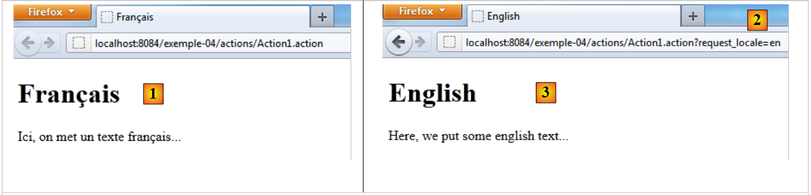
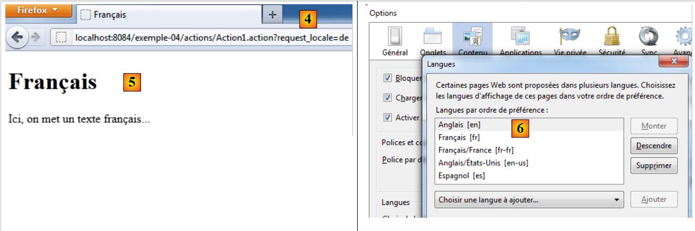
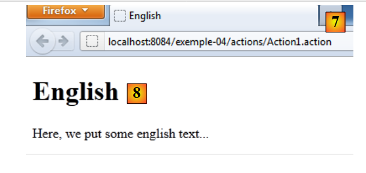

5. Example 04 – Internationalization
This example revisits the internationalization covered in the first example.
5.1. The NetBeans project


It includes:
- a view [Page1.jsp]
- two message files [messages*.properties]
- no actions
5.2. Project Configuration
The [struts.xml] file is as follows:
<?xml version="1.0" encoding="UTF-8" ?>
<!DOCTYPE struts PUBLIC
"-//Apache Software Foundation//DTD Struts Configuration 2.0//EN"
"http://struts.apache.org/dtds/struts-2.0.dtd">
<struts>
<!-- internationalization -->
<constant name="struts.custom.i18n.resources" value="messages" />
<!-- default package -->
<package name="default" namespace="/" extends="struts-default">
<default-action-ref name="index" />
<action name="index">
<result type="redirectAction">
<param name="actionName">Action1</param>
<param name="namespace">/actions</param>
</result>
</action>
</package>
<!-- actions package -->
<package name="actions" namespace="/actions" extends="struts-default">
<action name="Action1">
<result name="success">/views/Page1.jsp</result>
</action>
</package>
</struts>
- Line 8 defines a Struts constant that specifies the name of the internationalized messages file, in this case `messages`. The `[messages_xx.properties]` files will be searched for in the project's ClassPath. For this reason, they have been placed here at the root of [Source Packages] [1].
- Lines 21–23: define an action [Action1] without an associated class. A default Struts class will then be used, whose execute method returns the key "success". The view [/views/Page1.jsp] will then be returned to the client. It is important to understand that this is not the same as directly calling the view [/views/Page1.jsp]. In fact, calling an action triggers the execution of interceptors, which a direct call to a view does not do. One of the interceptors handles internationalization.
5.3. The message files
messages.properties
page.text=Here, we put some French text...
page.title1=French
page.title2=French
messages_en.properties
page.text=Here, we put some English text...
page.title1=English
page.title2=English
They define three keys: page.text, page.title1, and page.title2. The [messages_en.properties] file will be used if the page language is English (en). The [messages.properties] file will be used for all other languages. This is the default message file. The language used is either:
- the language of the client browser as specified in its preferences sent to the server
- the one requested by a client request with the parameter request_locale=xx.
5.4. The [Page1.jsp] view
The view is as follows:
<%@page contentType="text/html" pageEncoding="UTF-8"%>
<%@ taglib prefix="s" uri="/struts-tags" %>
<!DOCTYPE html>
<html>
<head>
<meta http-equiv="Content-Type" content="text/html; charset=UTF-8">
<title><s:text name="page.title1"/></title>
</head>
<body>
<h1><s:text name="page.title2"/></h1>
<s:text name="page.text"/>
</body>
</html>
- line 7: displays the message for key page.title1
- line 10: displays the message with the key page.title2
- line 11: displays the message with the key page.text
5.5. Testing
Let's run the project:
 |
- In [1], the page was displayed in French. The [messages.properties] file was used because the browser had French set as its preferred language.
- In [3], the page was displayed in English. The [messages_en.properties] file was used because the URL [2] used the request_locale=en parameter.
 |
In [4], a page in German (de) is requested. Since there is no [messages_de.properties] file, the default file [messages.properties] is used [5].
In [6], English is set as the browser's preferred language.
 |
In [7], the [Action1] action is requested without language parameters. The request comes from a browser whose preferred language is English (en). Therefore, the [messages_en.properties] file is used [8].
From now on, all projects will have a single [messages.properties] file that will be used for all languages. This will require us to write views that use the keys from this file. Internationalizing into English will simply involve creating the [messages_en.properties] file for English messages. No other changes are needed.